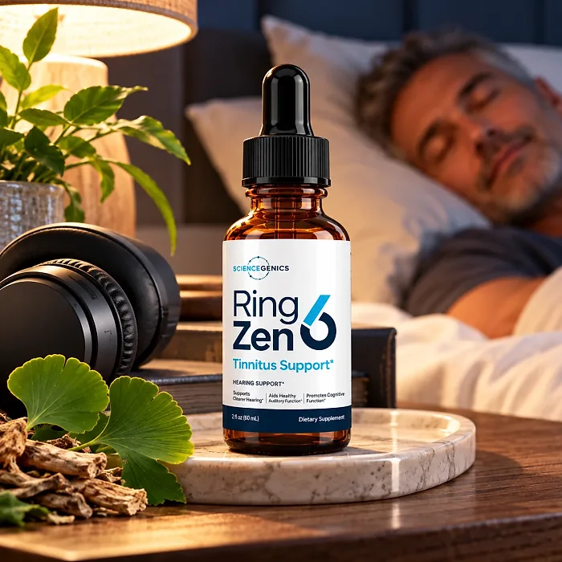
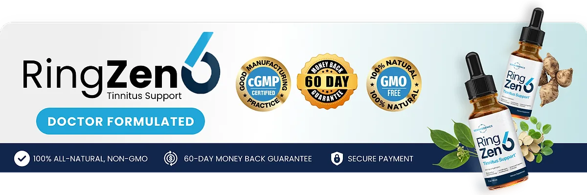

What Is RingZen6 And How Does It Work?
RingZen6 is a dietary supplement in liquid drop form designed to support healthy hearing, auditory function, and mental clarity for adults who want to address the noisy, tired, distracted feeling that can build up with age, loud environments, and poor sleep through a natural, dependable approach — without complicated routines or temporary quick fixes.
It utilizes a simple twice-daily dropper of a formula with over 20 ingredients, including Gymnema Leaf, Eleutherococcus Root, Coleus Forskohlii Root, Maca Root, Grape Seed, African Mango Seed, and Astragalus Root, to support the auditory neurons, healthy blood flow to the ears, and antioxidant protection.
The ingredients in RingZen6 are botanicals, roots, and seeds that, according to the official website, are carefully selected to support healthy hearing, and the label adds that it aids healthy auditory function, supports clearer hearing, and promotes cognitive function, particularly for adults who prefer a simple liquid over pills.
Rather than acting as a short-lived fix, RingZen6 focuses on supporting the ear and the brain together, working gradually alongside healthy habits such as protecting the ears from noise and sleeping well, to help maintain calm, clear listening.
With consistent daily use, a formula of this kind is intended to help with clearer listening, more restful nights, and better focus during the day, especially when combined with less noise exposure, good sleep, and regular hearing check-ups.
From a practical standpoint, RingZen6 is a daily hearing support liquid — a dropper under the tongue or in a glass of water or juice.
Manufactured in the United States, according to the official FAQ, by ScienceGenics, the brand on the label, and described as made with pure plant ingredients and natural minerals, RingZen6 is designed for regular daily use, focusing on safety, purity, and quality.
RingZen6 Ingredients
The official website says RingZen6 contains over 20 carefully selected ingredients and highlights the seven below, chosen to support healthy hearing, circulation, and clarity as part of a consistent daily routine:
Gymnema Leaf: An Ayurvedic leaf included to support a healthy inflammatory response.
Eleutherococcus Senticosus Root: An adaptogen, also called Siberian ginseng, that supports cognitive function and memory.
Coleus Forskohlii Root: A root that the official website includes to support auditory neurons.
Maca Root: An Andean root that supports blood flow to the ears.
Grape Seed: A source of antioxidants that help protect the ear.
African Mango Seed: A seed included to support energy production.
Astragalus Root: A traditional root that the official website says supports clear sounds.
Together, these ingredients are designed to support hearing, focus, and calm from within. The official website does not publish the full list of more than 20 ingredients or the amount of each one, so the bottle label is the reference to check.
RingZen6 is designed for daily use, offering a natural, non-prescription approach to supporting hearing wellness, without stimulants or complicated routines.
RingZen6 Side Effects
RingZen6 is generally considered well tolerated and is designed for adults of different ages and lifestyles who are looking for a safe, natural, and balanced approach to hearing wellness, especially those who prefer an easy daily liquid to support clear listening and focus without resorting to risky solutions with severe side effects.
The official website describes the formula as very gentle, made with pure plant ingredients and natural minerals and manufactured in the United States, reinforcing consistency, safety, and reliability.
With no widespread reports of serious side effects, RingZen6 is generally considered a well-tolerated option. A few points deserve attention: gymnema and African mango may lower blood sugar, so people who take medication for blood sugar should talk to a doctor first; coleus forskohlii may lower blood pressure and interact with blood pressure medication; and grape seed may add to the effect of blood thinners. Sudden hearing loss, ear pain, or dizziness need prompt evaluation by a doctor. It is not intended to diagnose, treat, cure, or prevent any disease, and individual results may vary.
Pregnant or nursing women, people under 18, and anyone with a medical condition or taking prescription medication should consult a physician before using RingZen6, ensuring it fits safely within their personal wellness plan.
RingZen6 Dosage
The recommended RingZen6 dosage, according to the official FAQ, is one dropper in the morning before breakfast and another dropper before lunch. A full dropper contains about 15 drops, and it is designed to fit easily into a daily routine.
The official FAQ explains that you can place it under your tongue, dissolve it in a glass of water, or add it to natural juice, so it can be taken however feels most convenient.
For best results, consistency is key. Each bottle holds 2 fl oz (60 ml), a 30-day supply, and the official FAQ says the best results come with consistent use for 3 months or longer, which is why many people make it part of an ongoing routine.
There is no need for complex schedules or multi-step routines. Two simple daily doses are designed to build support gradually alongside protecting your ears from loud noise, good sleep, and regular hearing check-ups.
As with any dietary supplement, it's important not to exceed the recommended dose and to check the label on your bottle. RingZen6 works best when used regularly, combined with proper hydration, balanced nutrition, and healthy daily habits.
RingZen6 – Refund Policy
You can order RingZen6 with confidence, knowing that every purchase is protected by a 60-day, 100% money-back guarantee. This allows you to try the formula and decide if it delivers the support you expect.
According to the refund policy on the official website, you have 60 days from the date of purchase to request a refund, and you can return the product, even empty bottles. The customer pays the return shipping and handling, and refunds do not include shipping or handling charges.
How the refund process works: Email support with the subject line "Refund Request". Support then sends the details for returning the product to PO Box 90129, Lakeland, FL 33804. Once the return is received, the refund is processed to your original payment method.
Customer Support Contact Information: support@ringzen6today.com, as listed on the official website, which also mentions a US-based customer support team. Order questions can also be sent to BuyGoods, the retailer.
Refund Processing Time: The refund is processed after the return is received, and the time for the amount to appear on your statement depends on your bank or card company.
This refund policy is designed to give customers a clear and transparent experience when trying RingZen6.
RingZen6 Customer Reviews
-
Carol M. — Wilmington, North CarolinaVerified Purchase – 6 Bottles
“RingZen6 did wonders to support my hearing. I’m a teacher and I need to be able to hear my students, so protecting my ears against noise is a must. Go for the 6-bottle pack – it’s the best investment you’ll ever make!”
-
George C. — San Antonio, TexasVerified Purchase – 6 Bottles
“I have tried a minimum of 10 different products… I slept well for the first time in years… Love it to say the least.”
-
Megan D. — Benson, ArizonaVerified Purchase – 6 Bottles
“It’s only been about 3 weeks since I started taking RingZen6. I love how easy it is to take and how well it works to support my mental clarity. You can just mix it with your morning coffee and be on your way.”
RingZen6 – Where To Buy
RingZen6 is sold through its official website, so if you decide to try it, it's important to be careful about where you purchase it. The official website is the only sales channel the manufacturer lists, and it does not point to marketplaces such as Amazon, eBay, or Walmart.
Listings on third-party platforms may look similar but cannot be verified as authentic, raising concerns about safety, quality, and ingredient freshness. Products purchased outside the official source may not be covered by the 90-day guarantee.
For this reason, it makes sense to purchase RingZen6 only through the official website. Buying directly from the official source ensures you receive the authentic original product, made in the USA, with access to customer support and the full guarantee. According to the official website, every order is a one-time purchase, with no subscription or auto-ship, and orders are processed by BuyGoods, the retailer named on the site.
To avoid counterfeit batches and ensure maximum quality, always verify that you are ordering from the official RingZen6 website before completing your purchase.
To ensure you’re getting the authentic product, most users choose to visit the official website.
Is RingZen6 A Scam?
Based on what the official website discloses, RingZen6 does not appear to be a scam. It is a real liquid supplement from ScienceGenics, sold through an established retailer (BuyGoods), and formulated to support healthy hearing, auditory function, and mental clarity as part of a consistent routine.
The ingredients used in RingZen6 — Gymnema Leaf, Eleutherococcus Root, Coleus Forskohlii Root, Maca Root, Grape Seed, African Mango Seed, and Astragalus Root — are known botanicals, and the official website describes what each one is included for and lists scientific references.
In addition to its formula, RingZen6 is manufactured in the United States, according to the official FAQ, with a support email and a published return address in Lakeland, Florida, with a focus on clarity and simple returns.
The customers quoted on the official website describe better sleep, easier listening, and more mental clarity. A fair point of criticism is that the website does not publish the full ingredient list or the amounts, the FAQ mentions "ProNerve6", another product, and the order page uses countdown timers and strong claims. Results vary from person to person, and no supplement replaces a hearing test or an ear doctor.
RingZen6 is backed by a 60-day money-back guarantee, and the return steps and the return address are published on the official website, which gives customers a clear path if the product does not meet their expectations.
If you're looking for a simple daily liquid to support hearing, calm, and focus without complicated routines, RingZen6 is worth considering — especially when purchased directly from the official website.
For those who want to verify product details or check current availability, the official RingZen6 website remains the safest option.

Check Availability On Official Website
